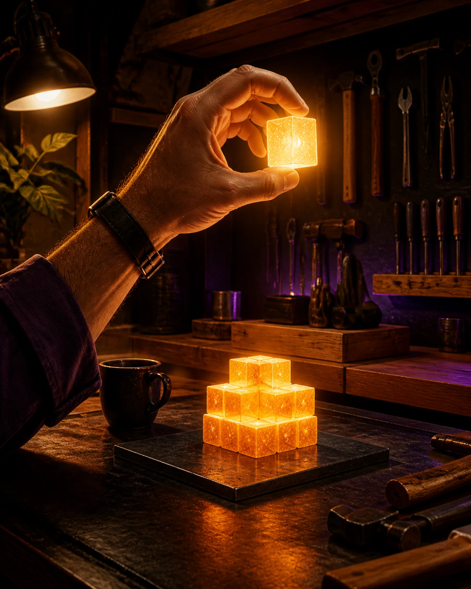
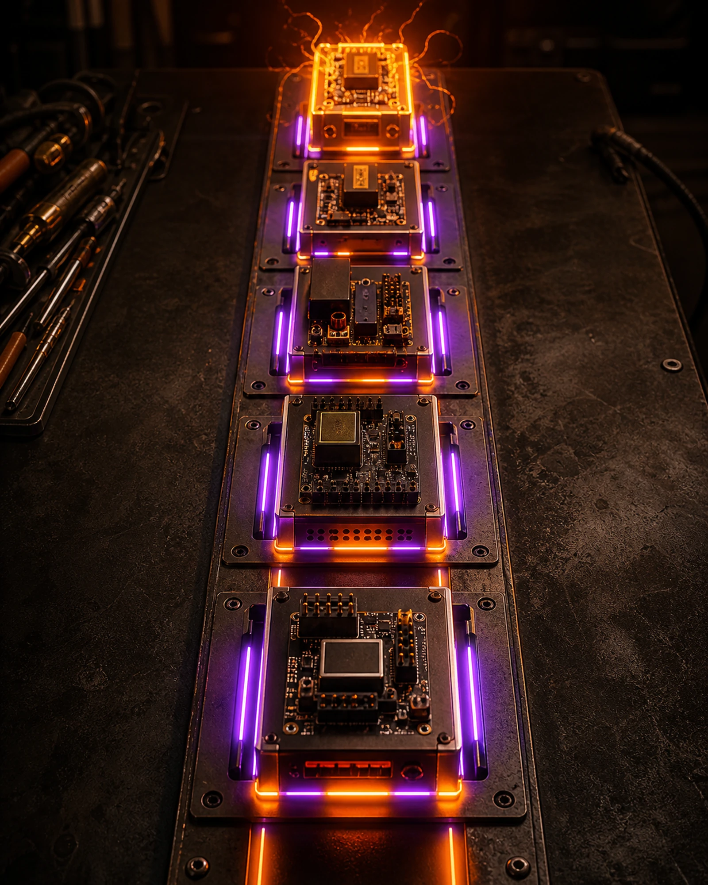

Start here.
Six doors, in the order they are worth taking. The first one needs nothing at all — no account, no extension, no download. Everything below runs in this browser.
-
1Step
Play
Two-player hotseat on one machine, or tick the NPC box and seat two plays itself. Each seat gets a legal 40-card Stack and the engine runs the whole rulebook — costs, targeting, the Buffer burn, the clash.
Open the table → -
2Step
Learn
Six steps, about five minutes: take them from 20 Uptime to zero, take one free Resource a turn, commit it, spend it before the phase ends, then clash. Real card faces the whole way.
Take the 5-minute start → -
3Step
Build
Eleven preconstructed Stacks — five mono-affinity Starters and six rebuilt Classics — or build your own 40 from the full pool, alongside the collection you have pulled. Saved Stacks play at the table, hotseat and online alike.
Open the Stack Builder → -
4Step
Play online
One referee deals both seats and runs the rules; every play travels over a socket and only the signed result touches a relay. Bring a Stack you built, or let the table deal you one — the two are matched separately. Sign in with nostr, play for sats or for nothing.
Find an opponent → -
5Step
Open
One booster box, shuffled once from a published seed and committed by hash before the first pack was opened. Pulls come off the top, so nobody can hold a rare back.
Open a pack → -
6Step
Browse
All 295 Edition One cards. Search by name, ID, rules text or affinity, and read the complete text with its rules notes and a protocol note that cites a real source.
Open the gallery →
Also The full rulebook Play online over nostr Lore of the world Sats leaderboard
One word first: sats. A sat (satoshi) is the smallest unit of Bitcoin — real money, not game points. You never need a single one to play this game: every card, every match and the whole site is free. Staking sats on a duel is an optional side bet between two adults, off unless both of them switch it on, and the software never touches it.
Finished cards. One coherent set.
No placeholders and no roadmap art. Every released image is a finished tournament card, drawn in one frame language: circuit traces, corner pads, a steel type banner and a chip square for every number.


→ All 295 cards, with search, filters and complete card text
A turn, in three moves.
You start at 20 Uptime. So does the opponent. Take theirs to zero and the match is yours — the whole game hangs off that one number.

1 · Take a Resource
One free Resource per turn, from your own Stack. Commit it to pay a cost — spend it before the phase ends or the Buffer burns it.

2 · Put it in the Queue
Everything you play enters a Queue, and the last answer resolves first. That is where the real decisions live — and where a Zap can turn a lost clash around.
3 · Clash
Send your rigs down a route. Every route can be defended; whatever gets through comes off their Uptime. The engine checks it all, so nobody argues about the rules.
The box is committed.
Rarity here is copies in a box, exactly like a printed booster box — not a hidden dice roll. The box was shuffled once from a published seed, and the SHA-256 over that exact order went out before the first pack was opened. Pulls come off the top, so nobody can hold a rare back.
Alpha: packs are free and stored in your browser while the Lightning mint is wired up. When it goes live you pay an invoice with your own wallet — this site never sees a key or a balance.
Zap duel. Winner takes the stake.
Online play runs through one referee that deals both seats and rules on every play. Before a match, both players can agree a stake in sats — the winner receives the zap, wallet to wallet over Lightning. The platform never touches the money.
Illustration · Uptime 20 against 7, both seats staked
1 · Agree
Both players confirm the stake at setup. It is recorded in the signed match transcript.
2 · Play
Both clients run the same deterministic engine, and every action is hash-chained — the result is provable.
3 · Zap
After the win the app opens the zap to the winner's Lightning address (NIP-57). Honor system.
4 · Publish
Both players publish the signed result to Nostr. Settled duels build a public track record.
v1 is an honor system, and staking is optional — off unless both players agree it before the match. The software never holds, escrows or moves a satoshi: it records the amount the two of them agreed and reminds the loser to send it. Any settlement happens between those two people, wallet to wallet, with their own wallets. Escrowed stakes are under review as a later opt-in module, legal assessment included. Online seats need a NIP-07 signer such as Alby or nos2x — the local hotseat never does.
The table is already open.
No sign-up wall, no launcher, no waiting list. Press the button and you are dealt in.